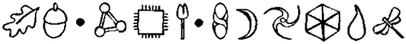
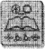

YAZ mevsiminde Ho Şi Minh Şehri. Normalin üzerinde, bunaltıcı bir sıcak vardı, işin ucunda çok önemli bir şey olmasaydı Artemis Fowl’un bu rahatsız ortama asla katlanmayacağını söylemek bile gereksizdi. Bu planı için önemliydi.
Güneş Artemis’e göre değildi. Ona yakışmıyordu. Evde, ekran başında geçirdiği uzun saatler, yanaklarının rengini soldurmuş tu. Bir vampir kadar beyazdı ve güneş ışığına çıkınca bir o kadar da hırçınlaşıyordu.
“Umarım, yine boşa kürek çekmiyoruzdur, Kâhya,” dedi yumuşak ama keskin bir ses tonuyla. “Özellikle de Kahire’den sonra.”
Konuşmasında hafif bir azar vardı. Kâhya’nın adamlarından aldığı bilgiyle daha önce Mısır’a gitmişlerdi.
“Hayır efendim, bu kez eminim. Nguyen iyi bir adamdır.”
“Hımm,” diye homurdandı Artemis, kuşkuyla.
Yoldan geçenler, bu iriyarı Avrasyalının, küçük bir çocuğa efendim demesine şaşırabilirlerdi. Ne de olsa artık üçüncü binyıldaydık. Oysa bu sıradan bir ilişki değildi ve bunlar sıradan turistler değillerdi.
Dong Khai Sokağında, kaldırım kenarındaki kafelerden birinde oturmuş, motosikletleriyle meydanda gezen gençleri izliyorlardı.
Nguyen gecikmişti ve altında oturdukları şemsiyenin ufacık gölgesi, Artemis’in huysuzluğunu arttırmaktan başka bir işe yaramıyordu. Ama bu onun her günkü karamsarlığıydı. Somurtkan bakışlarının altında, bir ümit ışığı parlıyordu. Acaba bu yolculukları gerçekten de bir işe yarayacak mıydı? Kitabı bulabilecekler miydi? Çok fazla ümitlenmek istemiyordu.
Bir garson hızla masalarına doğru yaklaştı.
“Biraz daha çay, beyler?” diye sordu başını hızla sallayarak.
Artemis iç geçirdi. “Rol kesmeyi bırak da otur.” Garson içgüdüsel bir hareketle Kâhya’ya döndü, ne de olsa erişkin olan oydu.
“Ama efendim, ben garsonum.”
Artemis dikkat çekmek için masaya vurdu.
“El yapımı ayakkabılar ve ipek bir gömlek giyiyor, tam üç tane altın yüzük takıyorsun. İngilizcende hafif bir Oxford aksam var ve tırnakların yeni manikür yaptırmış gibi parlıyor. Sen garson değilsin. Sen aracımız, Nguyen Xuan’sın ve silahımız olup olmadığını kontrol etmek için bu gülünç kılığa büründün.”
Nguyen’in omuzları çöktü. “Doğru. Çok şaşırtıcı.”
“Pek sayılmaz. Yırtık pırtık bir önlük insanı garson yapmaya yetmez.”
Nguyen küçük bir fincana nane çayı doldurup oturdu. “Gel de seni silah durumu konusunda bilgilendireyim,” diye sürdürdü konuşmasını Artemis. “Ben silahsızım, Ama Kâhya, benim ... şey... kâhyamın omzundaki kılıfta bir tabanca, çizmelerinde iki sustalı bıçak, kolunda bir silah, iki mermilik bir derringer tabanca, saatinde boğma teli ve ceplerinde saklanmış üç tane bayıltıcı el bombası var. Unuttuğum bir şey var mıydı, Kâhya?” “Cop, efendim.”
“Ah, evet. Gömleğinin altına tıkıştırdığı içi kurşun dolu bir cop.”
Nguyen eli titreyerek fincanı ağzına götürdü. “Telaşlanmayın Bay Xuan,” diye gülümsedi Artemis. “Bu silahlar size doğrultulmayacak.”
Nguyen rahatlamış görünmüyordu.
“Hayır,” diye sürdürdü konuşmasını Artemis. “Kâhya silahlarını kullanmadan da sizi yüzlerce farklı biçimde öldürebilir. Oysa tek birinin bile yeterli olduğundan eminim.”
Nguyen korkudan bayılmak üzereydi. Artemis’in insanlar üzerindeki etkisi genellikle buydu. Güçlü bir yetişkinin sözleri ve yetkesiyle konuşan, soluk benizli bir çocuktu. Nguyen, Fowl adını önceden duymuştu — zaten uluslararası yeraltı dünyasında bu adı kim duymamıştı ki? - ama yaşça daha büyük olan bir Artemis’le karşılaşacağını ummuştu, bu çocukla değil. ‘Çocuk’ sözcüğü, çelimsiz ve kendine özgü bir adalet anlayışı olan bu kişilikle pek bağdaşmıyordu. Dev Kâhya’ya gelince. Kocaman elleriyle insanın belkemiğini ince bir dal gibi kırabilecek güçte görünüyordu. Nguyen karşılığında alacağı para ne olursa olsun, bu garip insanların yanında bir dakika daha kalamayacağını düşünmeye başlamıştı.
“Artık iş konuşalım,” dedi Artemis ve masanın üzerine küçük bir kayıt cihazı koydu. “İnternet ilanımıza yanıt verdin.”
Nguyen başını salladı, bir yandan da verdiği bilginin doğru olması için dua ediyordu.
“Evet Bayım.. .Efendi Fowl. Aradığınız şeyin.. .nerede olduğunu biliyorum.”
“Gerçekten mi? Ben de senin sözüne inanmalıyım, öyle mi? Beni bir tuzağın tam ortasına götürüyor olabilirsin. Ailemin çok sayıda düşmanı var.”
Kâhya efendisinin kulağının çevresinde uçuşan bir sivrisineği eliyle yakaladı.
“Hayır, hayır,” dedi Nguyen, cüzdanını arayarak, “işte, bakın.”
Artemis resme dikkatlice baktı. Kalp atışlarının hızlanmaması için özel bir çaba harcadı. Oldukça ümit verici görünüyordu ama son zamanlarda bir bilgisayar ve tarayıcı ile her şeyin sahtesinin yapılması mümkündü. Resimde gölgelerin arasından uzanan bir el görünüyordu, Yeşil, benekli bir el.
"Hımm,” diye mırıldandı Artemis. “Anlat bakalım.” "Bu kadın, Bir şifacı, Tu Do Sokağı yakınlarında oturuyor, Pirinç şarabı karşılığında hizmet veriyor. Sürekli sarhoş.”
Artemis başını salladı. Anlattıkları mantıklıydı. Kadının içmesi araştırmalarının ortaya çıkarttığı birkaç tutarlı gerçekten biriydi. Beyaz kazağının kırışıklıklarını düzelterek ayağa kalktı.
“Pekâlâ. Önden buyurun, Bay Nguyen.”
Nguyen incecik bıyığındaki teri sildi.
“Yalnızca bilgi. Anlaşmamız böyleydi. Başımı belaya sokmak istemiyorum.”
Kâhya ispiyoncuyu ustaca bir hareketle ensesinden kavradı.
“Üzgünüm Bay Nguyen ama seçme hakkınız olduğu zamanlar artık çok gerilerde kaldı.”
Kâhya direnen Vietnamlıyı, Ho Chi Minh Şehrinin ya da yerel halkın hâlâ kullandığı adıyla Saygon’un düz yollarında pek gerekli olmayan, kiralık bir dört çekere bindirdi çünkü Artemis sıradan insanların olabildiğince uzağında kalmayı yeğliyordu.
Jipin ağır ağır ve güçlüklere ilerlemesi, Artemis’in içinde büyüyen beklentiyi daha da dayanılmaz bir hale dönüştürüyordu. Bu duyguyu daha fazla bastıramıyordu. Nihayet araştırmalarının sonuna gelmişler miydi? Üç kıtadan aldıkları altı yanlış alarmdan sonra, bu sarhoş şifacı, gökkuşağının sonunda bulacakları altın olabilir miydi? Artemis kendi kendine kıkırdardı. Gökkuşağının sonundaki altın. Bir şaka yapmıştı. Bu her gün yaşanan bir şey değildi.
Motosikletler tıpkı dev bir sığlıktaki balıklar gibi dağıldılar. Kalabalığın sonu gelmeyecekmiş gibi görünüyordu. Ara yollar bile satıcılar ve pazarlık eden insanlarla kaynıyordu. Aşçılar balık başlarını kızgın yağa atıyor, haylaz çocuklar ise çalabilecekleri değerli bir şeyler var mı diye, çaktırmadan ayak altında dolaşıyorlardı. Bazıları da gölgede oturmuş, Gameboy’larıyla oynuyorlardı.
Nguyen’in kahverengi gömleği ter içinde kalmıştı. Onu terleten havanın nemli olması değildi, buna alışkındı. İçine düştüğü lanet olası durum onu bu hale getirmişti. Büyüyle suçu karıştırmaması gerekirdi. Bu olaydan yakasını sıyırabilirse, yaşam biçimini değiştireceği konusunda, kendi kendine söz verdi. Garip internet ilanlarına yanıt vermeye paydostu, Avrupalı suç krallarının oğullarıyla arkadaşlık etmeye ise kesinlikle paydostu.
Cip artık ilerleyemiyordu. Buradan sonra sokaklar dört çekerin geçemeyeceği kadar daralmıştı. Artemis Nguyen’e döndü. “Sanırım yolun bundan sonrasını yürümemiz gerekecek, Bay Nguyen. İsterseniz kaçın ama kürek kemikleriniz arasında keskin ve ölümcül bir acı duymaya hazırlıklı olun.”
Nguyen Kâhya’nın gözlerine baktı. Adamın neredeyse siyah sayılabilecek, koyu mavi gözleri vardı. Bu gözlerde merhamet yoktu. “Merak etmeyin,” dedi. “Kaçmayacağım.”
Araçtan indiler. Puslu yolda ilerlerken, kuşku dolu binlerce bakış onları izledi. Talihsiz bir kapkaççı, Kâhya’nın cüzdanını çalmaya yeltendi. Hizmetkâr kim olduğuna bile bakmadan adamın parmaklarını kırdı. Bu olaydan sonra yanına kimse sokulmadı.
Sokak iyice daralarak, tekerlek izleriyle dolu bir şeride dönüştü. Lağım ve atık sular, doğrudan çamurla kaplı yola akıyordu. Sakatlar ve dilenciler çeltik örtülerden oluşturdukları adacıkların üzerinde, birbirlerine sokulmuş, oturuyorlardı. Burada yaşayanların kaybedecek hiçbir şeyleri yoktu, bu üçlünün dışında.
“Pekâlâ?” diye sordu Artemis. “Nerede o?”
Nguyen parmağıyla paslı bir yangın merdivenin altındaki siyah üçgeni işaret etti.
“Şurada. Şunun altında. Hiç dışarı çıkmaz. Pirinç şarabı satın almak için bile birini gönderir. Artık gidebilir miyim?”
Artemis yanıt verme zahmetine bile girmedi. Onun yerine yangın merdiveninin altındaki aralığa ulaşmak için su birikintilerinin arasından kendine bir yol açmayı yeğledi. Gölgelerin arasındaki ürkek hareketleri fark edebiliyordu.
“Kâhya, bana şu koruyucu gözlükleri uzatır mısın?”
Kâhya kemerinden bir gece görüş gözlüğü çıkartıp Artemis’in kendisine uzattığı eline yerleştirdi. Gözlüğün odak motoru, ışığa uyum sağlarken vızıldadı.
Artemis gözlüğü takıp yüzüne oturttu. Her şey radyoaktif bir yeşile büründü. Derin bir soluk alarak, bakışlarım kıpırdanan gölgelere çevirdi. Rafya bir örtünün üzerinde, çömelmiş duran bir şey vardı, yok denecek kadar az ışıkta huzursuzca kımıldıyordu. Artemis odağın ince ayarını yaptı. İçerideki kadın ufacıktı, anormal ölçüde ufaktı ve pis bir şala sarınmıştı. Boş iç
ki şişeleri çevresindeki çamura yarıya kadar gömülmüşlerdi. Kadının kollarından biri kumaşın dışındaydı. Yeşilmiş gibi duruyordu. Ama her şey öyle görünüyordu zaten.
“Madam,” dedi Artemis, “size bir önerim var.” Kadının başı uyuklarmışçasına sallandı.
“Şarap,” dedi, karatahtaya sürten bir tırnak gibi kulak tırmalayıcı bir sesle. “Şarap, İngiliz.”
Artemis gülümsedi. Dil yetisi, ışıktan hoşlanmama; her ikisi de tamamdı.
“İrlandalı, aslında. Pekâlâ, önerim hakkında ne düşünüyorsunuz?”
Şifacı sıska parmağını kurnazca salladı. “Önce şarap. Sonra konuşma.”
“Kâhya?”
Koruma cebinden en iyi İrlanda viskisiyle dolu, çeyrek litrelik bir şişe çıkarttı. Artemis şişeyi alıp tahrik edercesine, gölgelere doğru tuttu. Gözlüğünü henüz çıkartabilmişti ki kadının pençeye benzeyen eli karanlığın içinden uzanıp viskiyi kaptı. Bu yeşil, benekli bir eldi. Hiç kuşku yoktu.
Artemis zaferiyle övünürcesine gülümsedi. “Arkadaşımızın parasını öde, Kâhya. Tamamını. Unutmayın, Bay Nguyen, bu aramızda kalacak. Kâhya’nın geri gelmesini istemezsiniz, değil mi?”
“Yo, yo, Bay Fowl. Dudaklarım mühürlüdür.” “Böylesi sizin de yararınıza olur. Aksi halde Kâhya onları sonsuza kadar mühürler.”
Nguyen oradan kaçarcasına uzaklaştı. Hayatta kalabildiği için öylesine rahatlamıştı ki dolar destesini saymaya kalkışmadı bile. Bu hiç de onun tarzı değildi ama nasılsa paranın hepsi buradaydı. Tamı tamına yirmibin dolar. Yarım saatlik bir iş için hiç de fena sayılmazdı. Artemis yeniden şifacıya döndü.
“Evet, madam, sizde benim istediğim bir şey var.” Şifacı ağzının kenarından akan bir damla içkiyi diliyle yakaladı.
“Evet, İrlandalı. Baş ağrısı. Diş ağrısı. Tedavi ederim.” Artemis gece-görüşü gözlüğünü takıp kadınla aynı boya gelmek için çömeldi.
“Toza karşı alerjim dışında hiçbir sağlık sorunum yok, madam ve bu konuda sizin bile bir şey yapabileceğinizi sanmıyorum. Hayır. Sizden istediğim, Kitabınız.” Büyücü kadın donakaldı. Şalın altından pırıl pırıl parlayan gözleri görüldü.
“Kitap mı?” dedi dikkatlice. “Kitap hakkında hiçbir şey bilmiyorum. Ben şifacıyım. Kitap istersen, kütüphaneye git.”
Artemis abartılı bir sabırla derin bir iç geçirdi. “Sen şifacı değilsin. Sen bir sprite, bir p’shog, bir peri, bir ka-dalunsun. Hangi dilde söylersen söyle. Ve ben Kitabını istiyorum.”
Yaratık uzun süre hiçbir şey demedi, sonra şalını alnından geriye doğru itti. Gece-görüş gözlüğünün yeşil ışığı altında hatları, Artemis’e bir Cadılar Bayramı maskesini anımsattı. Perinin altın rengindeki kısık gözlerinin altında, kancaya benzer, uzun bir burnu vardı. Kulakları sivriydi ve alkol bağımlılığı cildini tıpkı cam macunu gibi yumuşatmıştı.
“Kitap hakkında bir şeyler biliyorsan, insan,” dedi yavaşça ve viskinin etkisinden kurtulmaya çalışarak, “yumruğumdaki büyüyü de biliyorsundur. Seni, yalnızca parmaklarımı şaklatarak bile öldürebilirim!” Artemis omuz silkti. “Hiç sanmam. Şu haline bak. Ölü gibisin. Pirinç şarabı duyularını köreltmiş, siğillerini azaltmış. Acınacak haldesin. Buraya seni kurtarmaya geldim, Kitabın karşılığında.”
“Bir insan bizim Kitabımızdan ne isteyebilir ki?” “Bu seni hiç ilgilendirmez. Tek bilmen gereken, tercihlerinin neler olduğu.”
Perinin sivri kulakları titredi. Tercihler mi? “Birincisi, bize kitabı vermeyi reddedersin, biz de seni bu lağımda çürümeye bırakır, evlerimize döneriz.” “Evet,” dedi büyücü. “Bunu seçiyorum.”
“Ah, hayır. Bu kadar hevesli olma. Kitabı almadan buradan gidersem, bir güne kalmaz ölürsün.”
“Bir gün! Bir gün!” Üfürükçü güldü. “Ben senden bir asır fazla yaşayacağım. İnsanların dünyasında yaşamak zorunda kalan periler bile çağlar boyunca hayatta kalabiliyorlar.”
“Ama çeyrek litre kutsal suyu midelerine indirdikten sonra değil,” dedi Artemis, boşalmış viski şişesine hafifçe vurarak.
Perinin beti benzi attı, ardından keskin ve iğrenç sesiyle bir çığlık attı.
“Kutsal su! Beni katlettin, insan.”
“Doğru,” diye itiraf etti Artemis. “Her an tutuşmaya başlayabilir.”
Peri kararsızca midesini ovuşturdu. “İkinci tercihim ne?”
“Dinlemeye karar verdin, öyle mi? Çok iyi öyleyse. İşte ikinci tercih. Bana Kitabı yalnızca otuz dakikalığına verirsin. Ben de sana büyü gücünü yeniden kazandırırım.” Perinin ağzı bir karış açıldı. “Büyü gücümü yeniden mi kazandıracaksın? Olanaksız.”
“Kesinlikle değil. Elimde iki tane ampul var. Birincisi, belkide Tara kalesinin altmış metre altındaki dünyanın en büyülü yerlerinden biri olan sihirli kuyudan alınmış kaynak suyuyla dolu. — Bu, kutsal suyu etkisiz hale getirecektir.”
“Ya öbürü?”
“Öbüründe bir ölçek insan yapımı sihir var. Alkolle beslenen bir virüs ile bu virüsün harekete geçmesini ve çoğalmasını sağlayan bir maddenin karışımı. Bedenini pirinç şarabından tamamen arındırıp bağımlılığını ortadan kaldıracak, hatta mahvolmuş karaciğerini bile iyileştirecek. Biraz güç olacak ama ertesi gün, yeniden bin yaşındaymışsın gibi zinde olacaksın.”
Peri' dudaklarını yaladı. Peri Halkı’yla yeniden bir arada olabilmek. Çok cazipti.
“Sana nasıl güvenebilirim ki, insan? Beni bir kez kandırdın bile.”
“İyi bir noktaya parmak bastın. İşte anlaşma. Suyu sana karşılıksız olarak vereceğim. Kitaba baktıktan sonra da ilacı alacaksın. İster kabul et, ister etme.”
Peri biraz düşündü. Karın ağrıları onu kıvrandırma
ya başlamıştı bile. Bileğini uzattı.
“Kabul ediyorum.”
“Ben de öyle düşünmüştüm. Kâhya?”
İri yarı hizmetkâr yumuşak bir kutunun içinden bir şırınga tabancasıyla iki ampul çıkarttı. Berrak olanını şırıngaya doldurup, spriteın soğuk ve yapış yapış koluna batırdı. Peri bir an kaskatı kesildi, sonra gevşedi. “Güçlü büyü,” diye soludu.
“Evet. Ama sana ikinci iğneyi yaptıktan sonra geri kazanacağın kendi büyün kadar değil. Şimdi, Kitap.” Sprite pislik içindeki giysisinin kıvrımlarının arasında bir şeyler aramaya başladı. Artemis soluğunu tutmuştu. İşte bu kadardı. Kısa bir süre sonra, Fowl’lar eski güçlerine kavuşacaktı. İkinci Artemis Fowl’un önderliğinde yeni bir imparatorluk doğacaktı.
Peri kadın kıvrımların içinden kenetlenmiş elini çıkarttı.
“Bir işine yaramaz nasıl olsa. Eski dilde yazılı.” Artemis başıyla onayladı, konuşmaya cesaret edemiyordu.
Kadın yamru yumru parmaklarını açtı. Avucunun içinde bir kibrit kutusu büyüklüğünde, altından, minnacık bir kitap duruyordu.
“İşte, insan. Tam otuz dakikan var. Fazla değil.” Kâhya saygıyla eğilip küçük kitabı aldı. Koruma dijital kamerayı çalıştırıp kitabın ince sayfalarının fotoğraflarını teker teker çekmeye başladı. Bu işlem birkaç dakika sürdü. İşini tamamladığında, tüm cilt, kameranın çipine yüklenmişti. Artemis işini şansa bırakmak istemiyordu. Havaalanındaki güvenlik cihazlarının büyük önem taşıyan diskleri sildiği bilinirdi. Bu yüzden yardımcısına dosyayı cep telefonuna aktarmasını, sonra da Dublin’deki Fowl Malikânesinin e-posta adresine göndermesini söyledi. Otuz dakikalık süre sona ermeden, Peri Kitabındaki her bir simgeyi içeren dosya, güven içinde Fowl bilgisayarının içindeki yerini almıştı.
Artemis minik kitabı sahibine geri verdi.
“Seninle iş yapmak güzeldi.”
Peri dizlerinin üzerinde sendeledi. “Ya öbür iksir, insan?”
Artemis gülümsedi. “Ha, evet, şu canlandırıcı madde. Sanırım bu konuda söz vermiştim.”
“Evet. Söz vermiştin, insan.”
“Pekâlâ. Ama başlamadan önce, arındırma işleminin hiç de hoş olmadığı konusunda seni uyarmam gerekiyor. Bundan kesinlikle zevk almayacaksın, tek bir ânından bile.”
Peri çevresini saran pisliği işaret etti. “Sence bundan zevk alıyor muyum? Yeniden uçmak istiyorum.”
Kâhya ikinci ampulü şırıngaya doldurup iğneyi doğrudan cadının şahdamarına batırdı.
Cadı bir anda şiltenin üzerine yığılıp kaldı, tüm bedeni şiddetle sarsılıyordu.
“Gitme zamanı geldi,” dedi Artemis. “Yüz yıllık alkolün bedenden çıkması, asla görülmeye değer bir manzara olmasa gerek.”
Kâhya ailesi Fowl’lara yüzyıllardır hizmet etmekteydi. Bu hep böyle süregelmişti. Aslında, birçok ünlü dilbilimcisine göre, kâhya adı da buradan çıkmıştı. Bu sıra dışı anlaşmaların ilki, Virgil Kâhya’nın, büyük Normandiya seferi sırasında, Lord Hugo de Fole’nin yanında hizmetkâr, koruma ve aşçı olarak işe alınmasıyla olmuştu.
Kâhya ailesinin çocukları on yaşına geldiklerinde, İsrail’deki özel bir eğitim merkezine gönderilir ve burada kendilerine Fowl ailesinin en son üyesini korumak için gerekli tüm özel beceriler öğretilirdi. Bu becerilerin arasında, birinci sınıf aşçılık, nişancılıkla çeşitli yakın dövüş sanatları, ilk yardım ve bilgi teknolojisinin geleneksel bir birleşimi sayılabilirdi. Eğitimlerinin sonunda, koruyacakları bir Fowl yoksa, onlara genellikle Monako ya da Suudi Arabistan’daki çeşitli kraliyet ailelerinin fertlerini korumak için teklifler yağardı.
Bir Fowl ve bir Kâhya bir araya getirildiğinde, yaşamlarının sonuna kadar ayrılmaz bir ikili olurlardı. Kâhyalık çok zahmetli ve insanı yalnızlığa iten bir meslekti ama karşılığında iyi bir ödülü hak ederdiniz, tabii ki tadını çıkaracak kadar hayatta kalabilirseniz. Aksi halde, ailenize altı haneli bir tazminat verilir ve aylık bağlanırdı.
Şu an görevde olan Kâhya, tam on iki yıldır genç Efendi Artemis’i koruyordu, yani doğduğu günden beri. Ve asırlardır süregelen bir resmiyete bağlı kalmış olsalar da bir efendiyle hizmetkârdan çok farklı bir ilişkileri vardı. Artemis, Kâhya’nın arkadaş olarak nitelendirebileceği, Kâhya da her ne kadar Artemis’in emirlerine itaat etse de onun hayatta baba olarak nitelendirebileceği tek insandı.
Kâhya Bangkok-Londra seferini yapan uçağa binene kadar konuşmadı ama artık sorması gerekiyordu.
“Artemis?”
Artemis dizüstü bilgisayarının ekranından başını kaldırdı.
“Evet?”
“Periyi soracaktım. Neden yalnızca kitabı alıp onu ölüme terk etmedik?”
“Ceset kanıttır, Kâhya. Benim yöntemimle Peri Halkı hiçbir şeyden kuşkulanmayacak.”
“Peki ya peri?”
“Kitabı insanlara gösterdiğini itiraf edeceğini hiç sanmam. Ama yine de ikinci şırınganın içine hafif bir bellek yitirici karıştırdım. Uyandığında, bu son hafta ile ilgili bir belirsizlik yaşayacak.”
Kâhya takdir edercesine başını salladı. Hep iki adım önde, işte Efendi Artemis böyleydi. Hık demiş babasının burnundan düşmüş olduğunu söylerlerdi. Yanılıyorlardı. Efendi Artemis şimdiye kadar eşi benzeri görülmemiş biriydi.
Kâhya ikna olmuştu, patronunu evrenin sırlarını çözmek üzere bırakıp Silahlar ve Cephane adlı kitabına kaldığı yerden devam etti.